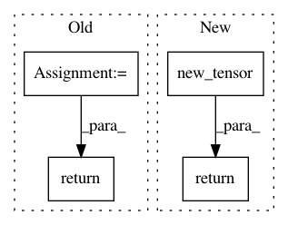

645c7c386e62d2fb1d50f4621c1a52645a13869f,fast_neural_style/neural_style/utils.py,,normalize_batch,#Any#,30
Before Change
def normalize_batch(batch):
// normalize using imagenet mean and std
mean = batch.data.new(batch.data.size())
std = batch.data.new(batch.data.size())
mean[:, 0, :, :] = 0.485
mean[:, 1, :, :] = 0.456
mean[:, 2, :, :] = 0.406
std[:, 0, :, :] = 0.229
std[:, 1, :, :] = 0.224
std[:, 2, :, :] = 0.225
batch = torch.div(batch, 255.0)
batch -= Variable(mean)
batch = batch / Variable(std)
return batch
After Change
def normalize_batch(batch):
// normalize using imagenet mean and std
mean = batch.new_tensor([0.485, 0.456, 0.406]).view(-1, 1, 1)
std = batch.new_tensor([0.229, 0.224, 0.225]).view(-1, 1, 1)
batch = batch.div_(255.0)
return (batch - mean) / std
In pattern: SUPERPATTERN
Frequency: 3
Non-data size: 4
Instances
Project Name: pytorch/examples
Commit Name: 645c7c386e62d2fb1d50f4621c1a52645a13869f
Time: 2018-04-24
Author: soumith@gmail.com
File Name: fast_neural_style/neural_style/utils.py
Class Name:
Method Name: normalize_batch
Project Name: open-mmlab/mmdetection
Commit Name: dd2907ed70a9f29ecbe2fba75de735e96daae3a2
Time: 2018-11-26
Author: chenkaidev@gmail.com
File Name: mmdet/ops/nms/nms_wrapper.py
Class Name:
Method Name: nms
Project Name: jonas-koehler/s2cnn
Commit Name: 4cbe889c27f5a0c272c54b4e1065ef3525c2fc09
Time: 2018-05-02
Author: geiger.mario@gmail.com
File Name: s2cnn/nn/soft/so3_integrate.py
Class Name:
Method Name: setup_so3_integrate